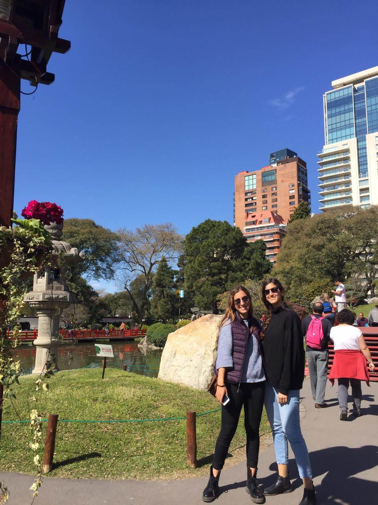

¿Quienes somos?

Somos dos amigas, Rosario y Emilia, que nos gusta mucho cocinar y queremos que nuestras recetas recorran los diferentes paladares del mundo.Tenemos 25 años y vivimos en Buenos Aireas, Argentina. Esta idea surgio de querer buscar un lugar donde encontrar recetas variadas, de todo tipo y ricas. Por eso nos unimos y creamos esta página, donde pueden encontrar las mejores recetas, son RE-buenas, son RE- cetas